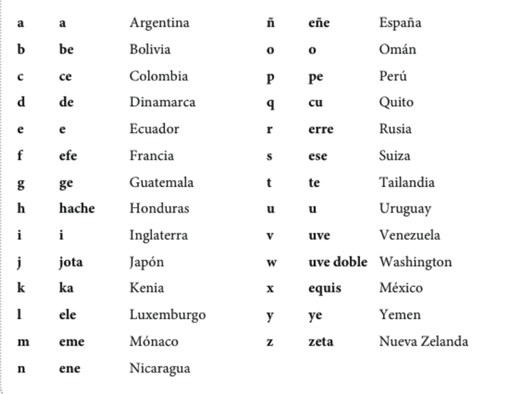
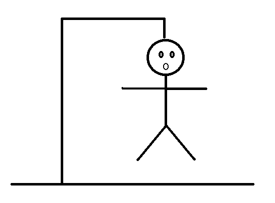
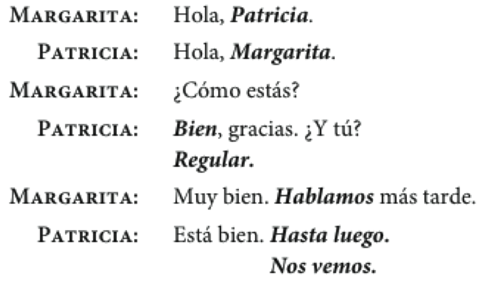
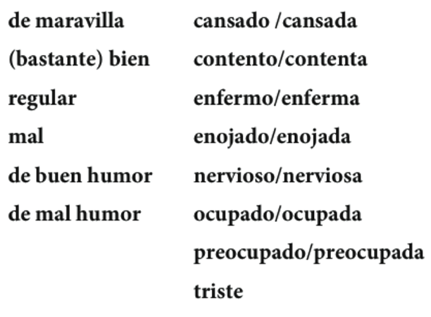
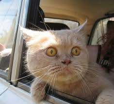
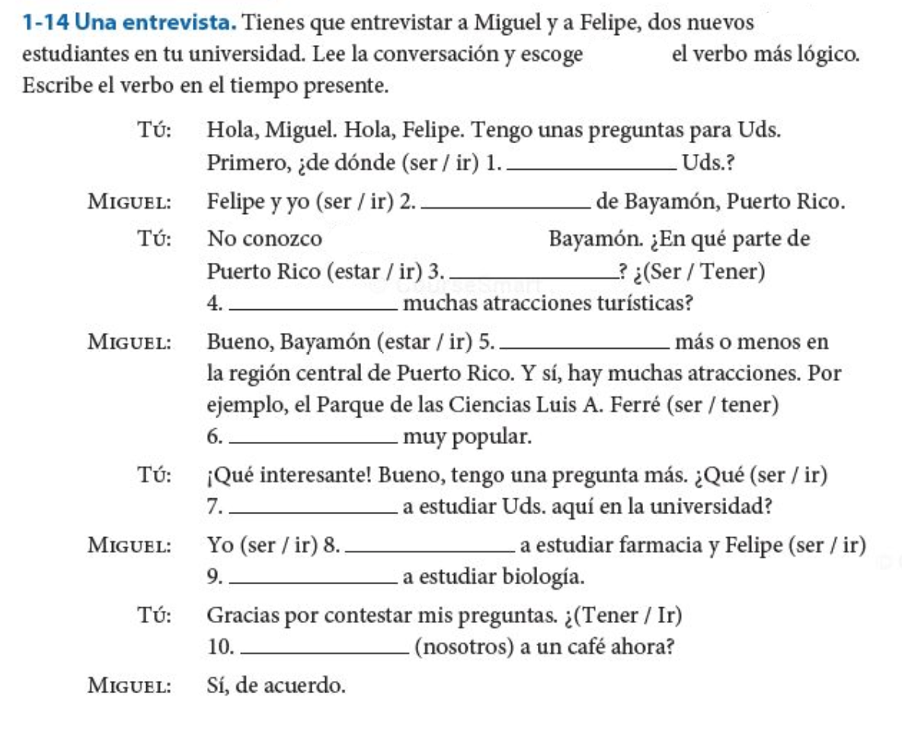
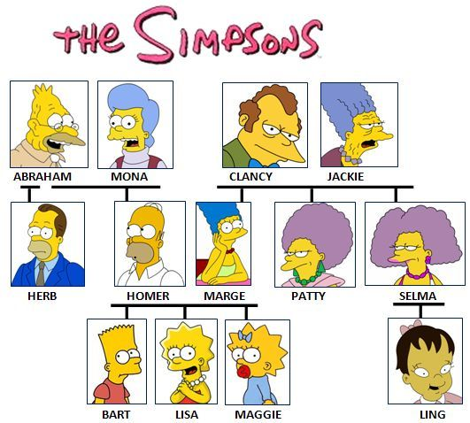
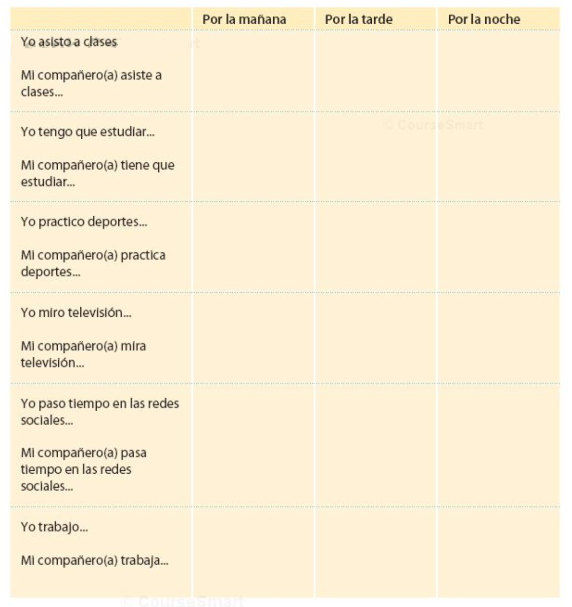
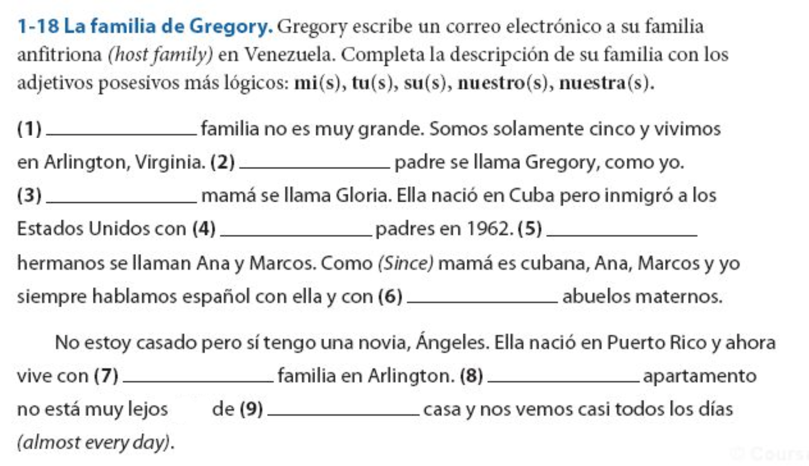

Español 1.5
Capítulo 1
Joseph V. Casillas
Middlebury College: Verano 2015
Repaso
Los sustantivos
- Género
- Número
- Artículos
Los sustantivos
- Género
- masculino
- femenino
- Número
- singular
- plural
- Artículos
- definidos
- indefinidos
El abecedario

¿Qué es esto? ¿Cómo se escribe?

El ahorcado

Los números

Los números

¿Cuántos objetos hay en la sala de clase?

- ¿Cuántos libros? ¿Cuántas mochilas?
- ¿Cuántos pupitres? ¿Cuántos bolígrafos hay?
- ¿Cuántos estudiantes hay? ¿Cuántas sillas hay?
Capítulo 1.1 "Así somos"
El plan

- Vocabulario
- Saludos
- Origen
- Intercambiar información básica
- Gramática
- los pronombres personales
- los verbos estar, ser, tener, ir
Los pronombres personales
| Singular | Plural | |
|---|---|---|
| 1a | yo | nosotros/as |
| 2a | tú | vosotros/as |
| 3a | él/ella/usted | ellos/ellas/ustedes |
El verbo estar
| Singular | Plural | |
|---|---|---|
| 1a | yo estoy | nosotros/as estamos |
| 2a | tú estás | vosotros/as estáis |
| 3a | él/ella/usted está | ellos/ellas/ustedes están |
Las presentaciones y los saludos formales (con los profesores)

Las presentaciones y los saludos formales (con los profesores)
Las presentaciones y los saludos informales (con los amigos)
Las presentaciones y los saludos informales (con los amigos)


¿Cómo estás?: Los estados y el verbo estar

Yo estoy ____
Ej. Yo estoy cansado(a)
Descanso (10 minutos)

¿Cómo está(n)?
¿Cómo está(n)?

¿Cómo está(n)?

¿Cómo está(n)?

¿Cómo está(n)?

¿Cómo está(n)?

¿Cómo está(n)?
¿Cómo está(n)?

¿Cómo está(n)?
¿Cómo está(n)?

Intercambiar información básica

- ¿Cómo te llamas?
- ¿Dónde vives?
- ¿Cuál es tu número de teléfono?
- ¿Cuál es tu dirección de correo electrónico?
El verbo tener
| Singular | Plural | |
|---|---|---|
| 1a | yo tengo | nosotros/as tenemos |
| 2a | tú tienes | vosotros/as tenéis |
| 3a | él/ella/usted tiene | ellos/ellas/ustedes tienen |
- ¿Cuántas clases tienes?
- ¿Cuántos años tienes?
- ¿Tienes hambre?
(clase, sueño, prisa, calor, frío, hambre)
El verbo ser
| Singular | Plural | |
|---|---|---|
| 1a | yo soy | nosotros/as somos |
| 2a | tú eres | vosotros/as sois |
| 3a | él/ella/usted es | ellos/ellas/ustedes son |
- ¿De dónde eres?
- ¿Cuál es tu dirección?
(profesor, estudiante, militar, hombre, mujer, padre, madre, simpático)
El verbo ir
| Singular | Plural | |
|---|---|---|
| 1a | yo voy | nosotros/as vamos |
| 2a | tú vas | vosotros/as vais |
| 3a | él/ella/usted va | ellos/ellas/ustedes van |
- ¿Adónde vas?
- ¿Que vas a hacer?
Más detalles...
- tener
- posesión (tengo tres gatos)
- obligación (tengo que estudiar)
- frases especiales
- tengo frío/calor/hambre/sed/sueño/etc.
- ir
- movimiento (voy a la biblioteca)
- futuro (voy a estudiar)

Repaso
Hemos visto
- Los pronombres personales
- Hay 4 verbos fundamentales en español (estar, ser, tener, ir)
- Tarea
- Usar estar, ser, tener e ir en conversaciones reales
- Estudiar el vocabulario
- Tarea opcional
- CA1-7, CA1-8
Capítulo 1.2
El plan
- Vocabulario:
- La familia
- Gramática:
- Posesión
- Verbos regulares
- Presentación del compañero
- Estrategias para la comunicación oral
- Cómo se graba un mp3 (actividad e-Portafolio)
La familia


¿Cómo es tu familia?
- Mi hermano mayor se llama...
- Mi padre tiene ... años.
- Mi tía vive en...
Los adjetivos posesivos
- Se utilizan para indicar posesión
- Tienen número y género
| 1a | mi(s) | nuestros(s)/nuestra(s) |
| 2a | tu(s) | vuestro(s)/vuestra(s) |
| 3a | su(s) | su(s) |
mi familia, mis abuelos
su hija, sus hijos
nuestra hermana, nuestros hermanos
La posesión con 'de'


- Para evitar la confusión en la 3a persona, se puede usar la preposión 'de'
Enrique y Alicia viven en Cádiz.
¿Dónde está sus casas?
- La casa de él está en San Fernando.
- La casa de ella está en Sanlúcar.
La posesión con 'de'
- Para evitar la confusión en la 3a persona, se puede usar la preposión 'de'
Enrique y Alicia tienen amigos que viven en Cádiz.
¿Dónde viven sus amigos?
- El amigo de Alicia vive en San Fernando.
- El amigo de Enrique vive en Sanlúcar.
¡Nunca usamos -'s- para indicar posesión!
Mi hermanas casa Tu amigos coche Su abuelos teléfono Nuestro perros correa Vuestras clases profesor Sus camas sábanas
Mi hermanas casa Tu amigos coche Su abuelos teléfono Nuestro perros correa Vuestras clases profesor Sus camas sábanas
La casa de mi hermana El coche de tu amigo El teléfono de su abuelo La correa de nuestro perro El profesor de vuestras clases Las sábanas de sus camas
Descanso (10 minutos)
Los verbos regulares
Estamos muy ocupados entre semana.

Los verbos regulares
Paso la semana en la universidad.

¿Cómo es tu rutina?
Normalmente yo...
A veces yo...
- paso mucho tiempo en el facebook.
- voy al gimnasio por la mañana/por la tarde.
- escucho música/mi iPod.
- limpio el cuarto/el apartamento.
- preparo la comida.
- tomo café con mis amigos.

El tiempo presente expresa...
...una rutina
- Estudio en la biblioteca todos los días.
...una acción continua
- Mi amiga vive en una residencia este semestre.
...una acción en el futuro
- Mis compañeros van a una fiesta mañana.
Los verbos regulares
Hay tres tipos de infinitivos: -ar, -er, -ir
| -ar | -er | -ir | |
|---|---|---|---|
| tomar | comer | asistir | |
| yo | tomo | como | asisto |
| tú | tomas | comes | asistes |
| él/ella/usted | toma | come | asiste |
| nosotros(as) | tomamos | comemos | asistimos |
| vosotros(as) | tomáis | coméis | asistís |
| ellos/ellas/ustedes | toman | comen | asisten |
Algunos verbos regulares
-ar
Adivinar
Gastar
Amar
Apagar
Ayudar
Invitar
Bailar
Jugar
Besar
Lavar
Cambiar
Levantar
Despertar
Pasear
Dibujar
Pensar
Disfrutar
Pintar
Durar
Practicar
Echar
Preguntar
Empezar
Prestar
Algunos verbos regulares
-er
Agradecer
Llover
Beber
Nacer
Caber
Ofrecer
Caer
Perder
Comer
Prometer
Comprender
-ir
Abrir
Partir
Construir
Pedir
Corregir
Prohibir
Decidir
Recibir
Despedir
Seguir
Discutir
Presentación de un compañero
Vais a hacer una presentación oral corta mañana
Duración de 1 a 2 minutos
El enfoque será en las construcciones que hemos visto en clase
Podéis hablar de lo que queráis (sugiero que os centréis en lo que hemos visto)
Gramática
- los sustantivos/artículos
- los pronombres personales
- los verbos ser/estar/tener/ir
- tener + sustantivo (posesión)
- tener que + infinitivo (obligación)
- ir a + sustantivo (movimiento)
- ir a + infinitivo (futuro)
- los adjetivos posesivos
Preparación
Para preparar debéis:
- Escoger un compañero
- Quedar en una hora esta tarde para hablar
- Utilizar nuestras estrategias para obtener información
- Apuntar toda la información (verificar que es correcta)
- Ensayar (podéis hacer un esquema básico en una tarjeta)
NO PODÉIS LEER
Estrategias para la comunicación oral
¡Ensayar! ¡Ensayar! ¡Ensayar!
Hablar lentamente
Vocales puras
Tensión bucal
Practicad palabras largas por sílabas
Cómo se graba un mp3 (actividad e-Portafolio)
- SansSpace
Repaso
Hemos visto
- Vocabulario: La familia
- Gramática:
- Posesión
- Verbos regulares (-ar, -er, -ir)
- Estrategias para la comunicación oral
- Cómo se graba un mp3 (actividad e-Portafolio)
La tarea
- Presentación de un compañero
Actividad posesivos

Actividad verbos regulares
La relación sujeto/verbo
SVO
Juan tiene tres clases este semestre.
Juan no tiene un laboratorio este semestre.
Yo tengo cuatro clases este semestre, pero ella tiene cinco.
Puentes Capítulo 1.3
El plan
- Vocabulario:
- El tiempo libre
- Gramática:
- Gustar
- Preguntas
- El presente progresivo
- Presentación del compañero (1:30 minutos)
¿Qué le gusta hacer en su tiempo libre?

¿Qué le gusta hacer en su tiempo libre?

El verbo gustar
- El verbo gustar tiene DOS formas: gusta y gustan
| Complemento Indirecto | gusta/gustan | Sujeto |
|---|---|---|
| Me | gusta | jugar al tenis |
| Te | gusta | el tenis |
| Le | gusta | el deporte |
| Nos | gusta | la clase |
| Os | gusta | Middlebury |
| Les | gusta | la lluvia |
El verbo gustar
- El verbo gustar tiene DOS formas: gusta y gustan
| Complemento Indirecto | gusta/gustan | Sujeto |
|---|---|---|
| Me | gustan | los árboles |
| Te | gustan | el tenis y el fútbol |
| Le | gustan | los deportes |
| Nos | gustan | las clases |
| Os | gustan | los edificios |
| Les | gustan | las nubes |
¿A ti qué te gusta hacer en tu tiempo libre?
- montar en bicicleta
- jugar videojuegos
- practicar el tenis
- mirar una película de terror
- bailar en una fiesta
- ir de compras
- correr por el campus
- leer el periódico
- practicar el básquetbol
¿Con qué frecuencia...
- vas de compras?
- vas al cine?
- a menudo
- a veces
- casi todos los días
- casi nunca
- nunca
El énfasis y aclaración con gustar y los nombres.
| Complemento Indirecto | gusta/gustan | Sujeto |
|---|---|---|
| A mí me | gusta | jugar al tenis |
| A ti te | gusta | el tenis |
| A él le | gusta | el deporte |
| A nosotros nos | gusta | la clase |
| A vosotros os | gusta | Middlebury |
| A ellas les | gusta | la lluvia |
A Carlos le gusta pasar su tiempo libre en la residencia, pero a Juan le gusta estudiar en su cuarto.
El énfasis y aclaración con gustar y los nombres.
| Complemento Indirecto | gusta/gustan | Sujeto |
|---|---|---|
| A mí me | gustan | los árboles |
| A ti te | gustan | el tenis y el fútbol |
| A él le | gustan | los deportes |
| A nosotros nos | gustan | las clases |
| A vosotros os | gustan | los edificios |
| A ellas les | gustan | las nubes |
A Carlos le gustan los plátanos, pero a Juan le gustan las manzanas.
¿A tus amigos y a ti les gusta...
jugar videojuegos?
patinar sobre el hielo?
nadar?
- Sí, nos gusta mucho.
- No, no tanto.
Descanso (10 minutos)
Cuando NO usamos gustar
 ¿Me gusta el director?
¿Me gusta el director?
- ¡NO!
- Me cae bien el director.
- Me llevo bien con el director.
Las preguntas
- de sí/no
- de información
Preguntas de sí/no
- Inversión del sujeto/verbo
| Verbo | Sujeto | Otros elementos |
|---|---|---|
| ¿Vive | Martín | en Madrid? |
| ¿Comes | (tú) | fruta todos los días? |
| ¿Tenemos | (nosotros) | tarea? |
- Sí, Martín vive en Madrid.
- No, no como fruta todos los días.
- No, no tenemos tarea.
Preguntas de información
- Requieren una expressión interrogativa
| Expression interrogativa | Verbo | Sujeto |
|---|---|---|
| ¿Dónde | vive | Martín? |
| ¿Qué | comes | (tú)? |
| ¿Cuándo | es | la reunión? |
Con un compañero

- Haced una lista de 4 preguntas (2 sí/no, 2 de información)
- Tened en cuenta la entonación
El presente progresivo
- Sirve para hablar de acciones en progreso
- estar + gerundio
- -ar = ando
- -er/-ir = iendo
- comer
- com
- com + iendo
- comiendo
Presentaciones
Repaso
Hemos visto
- Vocabulario:
- El tiempo libre
- Gramática:
- Gustar
- Preguntas
- El presente progresivo
- Tarea (opcional)
- CA1-15, CA1-16, CA1-17